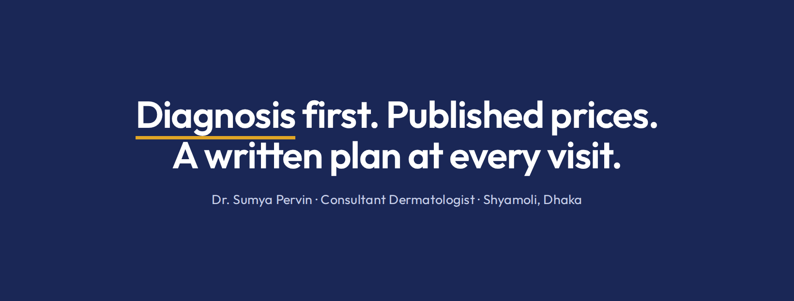
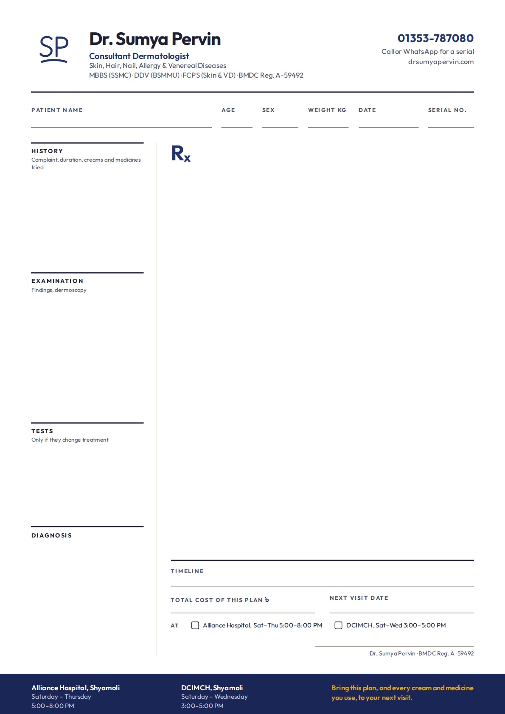
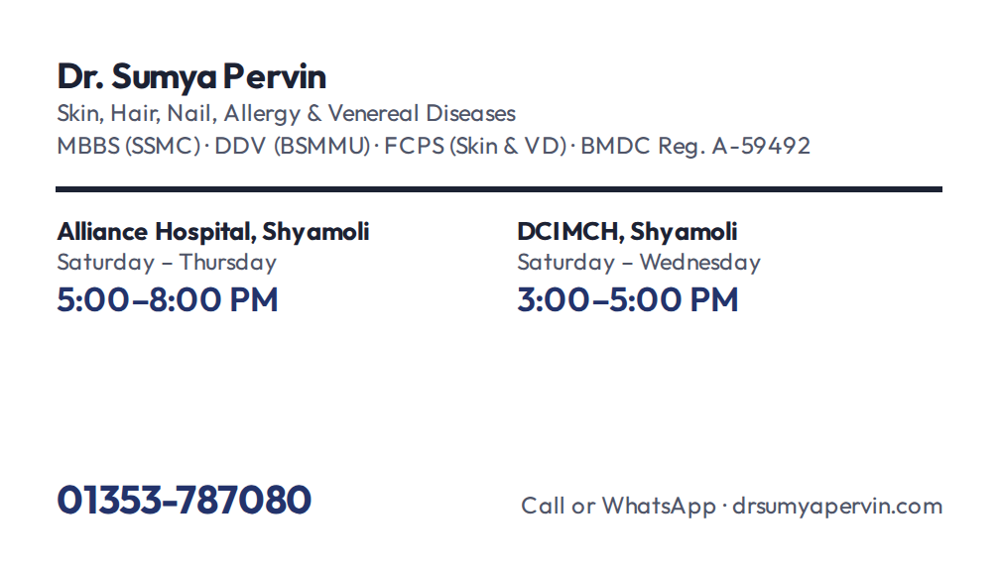
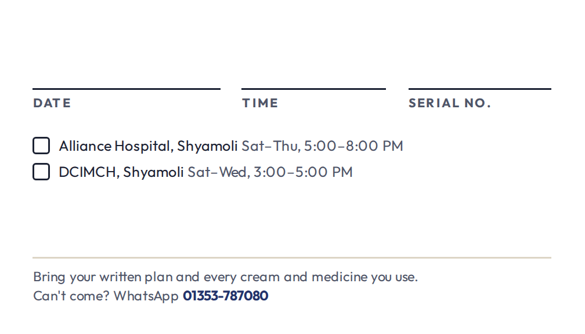

The approved Signature SP mark and everything built from it: logo files, social images, the written-plan pad, cards and chamber boards. Every file here is rendered by npm run build:brand-kit from the mark, facts and hours the website uses, so print and screen never disagree.
Type is outlined, so the SVGs look the same on a printer's machine without Outfit installed. Use the horizontal lockup wherever there is width, the stacked lockup in square spaces, and the mark alone where the name is already nearby.
Keep clear space equal to the height of the P's bowl on every side, marked x. Nothing else enters that zone, not even the edge of a card.
| Placement | Smallest | Stroke weight |
|---|---|---|
| Horizontal lockup | 160 px · 40 mm | 4, as drawn. Below this, use the mark beside live text. |
| Stacked lockup | 96 px · 24 mm | 4, as drawn |
| Mark, 40 px and up | 40 px · 10 mm | 4, as drawn |
| Mark, 24–40 px (site header, drawer) | 24 px | 5–6, so strokes stay above 1.4 px |
| Favicon tile | 16 px | 7.5 on its 64-unit tile |
The mark is one colour: Nil Indigo on light grounds, white or paper on Deep Nil, black when only one ink is available. Turmeric sits beside the mark at most once per view, as a rule or underline, never inside it.
#23336BC M Y K 100 93 27 30The mark, headings emphasis, prices, actions.
#1A2756C M Y K 99 88 27 58Floods: cards, nameboards, profile picture, footers.
#E0A526C M Y K 12 38 100 0The one mark per view. Never text on a light ground.
#F7F3EALight ground for screen; print uses the stock itself.
#1C2233C M Y K 84 75 58 79Body text and the heavy 2 px rules.
#C9D1EASecondary text on Deep Nil only.
The PDFs are RGB (sRGB). The CMYK builds above are approximate conversions for coated stock; give them to the printer as a starting point and approve a printed proof on the chosen paper before the full run. Deep indigo floods shift most between presses.
Outfit, one family in four weights, on screen and in print. Emphasis is colour and a drawn underline, never italic. Prices and hours always use tabular figures.
Dr. Sumya Pervin
Consultant Dermatologist · Skin, Hair, Nail, Allergy & Venereal Diseases
5:00–8:00 PM
Patient name
The profile picture is the image patients see most, beside every WhatsApp reply. It is drawn for the circle crop and stays legible at 40 px.

PDFs are trim size plus 3 mm bleed on every side, with type at least 4 mm inside the trim. The written plan is the practice in paper form: the same five steps the website publishes, ending in a timeline, a total cost and a next visit.



Fill or draw the mark in turmeric.
Stretch, squash or rotate it.
Add gradients, glows or shadows.
Thin the stroke, or redraw the letters in another font.
Set it on warm skin-tone or peach grounds.